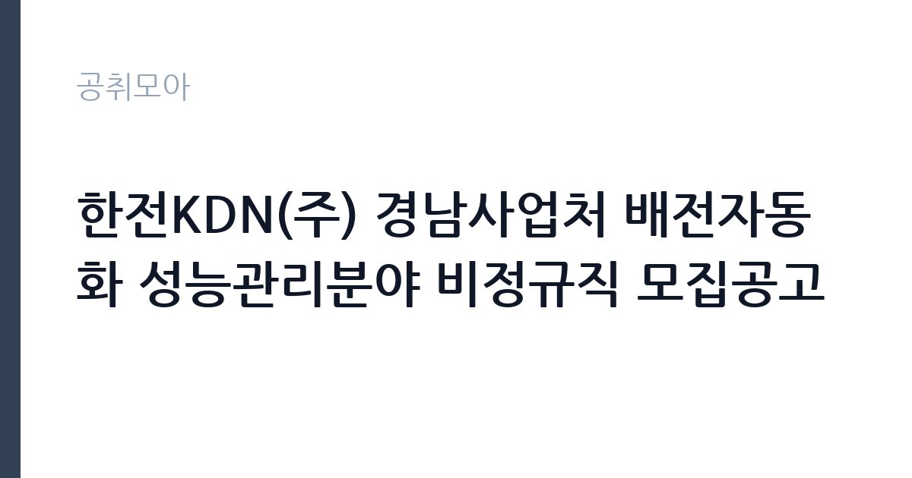

[공공기관] 한전KDN(주) 경남사업처 배전자동화 성능관리분야 비정규직 모집공고
한전KDN · 경남 · 마감 2026-11-18 (D-15) · 출처 잡알리오

한눈에 보는 모집 조건
| 기관 | 한전KDN |
|---|---|
| 공고명 | 한전KDN(주) 경남사업처 배전자동화 성능관리분야 비정규직 모집공고 |
| 고용형태 | 기간제 |
| 근무지 | 경남 |
| 게시일 | 2026-11-04 |
| 마감일 | 2026-11-18 (D-15) |
지원자격, 이렇게 읽으세요
- 자동차 운전면허증 소지자(1종 보통 이상)
기간제 근로자는 근로계약 기간이 정해진 신분입니다. 계약 기간과 갱신 가능 여부가 근로계약서에 명시되며 기간 만료 시 근로관계가 종료됩니다. 결원 보충이나 특정 사업 기간에 맞춰 채용되는 경우가 많아 업무 범위가 명확합니다. 이번 공고는 한전KDN에서 직접 진행하는 자체 전형으로, 응시자격과 제출서류는 공고문에 항목별로 제시됩니다. 이 공고는 자동차 운전면허증 1종 보통 이상 소지자를 요건으로 두고, 건설업 기초 안전보건교육 이수자나 이수 가능자를 함께 요구합니다. 현장 출동과 장비 운반이 업무의 전제이므로 실제 운전 가능 여부가 실질적인 조건입니다. 비정규직 채용으로 계약 기간이 정해져 있고, 근무지는 경남 지역 사업처 관할입니다. 세부 자격과 제출서류는 원문 공고문에서 확인해야 하며, 결격사유 조회와 채용 신체검사 절차가 따릅니다. 서류는 접수 마감 이후 보완이 되지 않으므로 자격 요건과 증빙 서류를 마감 전에 모두 갖춰야 합니다. 공고문에 명시된 우대 사항은 해당 여부를 확인해 증빙을 첨부해야 가점이 반영됩니다. 자격증은 유효 기간과 등록 상태를 확인해야 합니다. 갱신이 필요한 자격이라면 갱신 여부를 먼저 점검하십시오. 이 공고 원문에 적힌 응시 조건 문구는 '자동차 운전면허증 소지자(1종 보통 이상)' / '건설업 기초 안전보건교육 이수자 또는 이수 가능자'입니다. 문구를 그대로 읽고 본인 해당 여부를 하나씩 표시해 두면 서류 단계에서 탈락하는 일을 줄일 수 있습니다.
이 공고의 포인트
이 공고의 첫 번째 포인트는 고용 형태입니다. 계약 기간이 정해져 있어 근무 종료 시점이 명확합니다. 그만큼 짧은 기간에 어떤 실적을 남길지가 중요해집니다. 두 번째는 업무 범위가 명확하다는 점입니다. 배전자동화 설비 성능관리 직무로 채용되므로 배치 이후 담당 업무가 크게 흔들리지 않습니다. 세 번째는 근무지입니다. 경남 지역 근무로 수도권 공고에 비해 지원자 분포가 넓지 않아 상대적으로 경쟁이 분산되는 경우가 있습니다. 접수 기간이 길지 않아 서류 준비와 자격 확인을 동시에 진행해야 합니다. 같은 직무로 함께 올라온 공고 가운데 접수 마감이 가장 늦은 편이라 준비 시간을 상대적으로 확보할 수 있습니다. 선발 인원은 공고문에 명시되어 있으니 모집분야 항목을 함께 확인하십시오.
전형은 어떻게 진행되나
1차 서류, 2차 면접의 2단계로 진행되는 구성이 일반적입니다. 서류에서는 자격 요건과 경력 증빙을 확인하고, 면접에서는 실제 업무 수행 능력과 조직 적응을 봅니다. 직무에 따라 필기시험이나 실기, 컴퓨터 활용 시험이 추가되기도 하므로 공고문의 전형표를 먼저 확인하십시오. 단계별로 합격자만 다음 전형에 응시할 수 있고, 단계마다 응시 자격 확인 서류를 다시 제출해야 하는 경우가 있습니다. 최종합격자 발표 후에는 신원조회와 채용 신체검사가 남아 있습니다. 온라인 접수는 마감 시각이 분 단위로 정해지므로 시스템 시간을 기준으로 판단해야 합니다.
원문에서 확인한 전형 방식
- 자동차 운전면허증 소지자(1종 보통 이상) - 건설업 기초 안전보건교육 이수자 또는 이수 가능자
이런 분께 추천해요
- 1종 보통 이상 운전면허를 보유하고 실제 운행이 가능한 분
- 건설업 기초 안전보건교육을 이수했거나 이수할 수 있는 분
- 현장 출동과 야간 대응이 가능한 분
지원 전 체크리스트
- 응시자격 요건과 경력 기준을 충족하는가 — 경력은 증명서로 입증해야 합니다
- 계약 기간과 근무 시작일·종료일을 확인했는가
- 제출서류 목록을 모두 준비했는가 — 누락 시 서류 단계에서 탈락합니다
- 접수 마감 2026-11-18 이전에 접수 방식을 확인해 제출했는가
모집 일정과 제출 타이밍
접수 마감은 2026-11-18이고 공고는 2026-11-04에 게시되었습니다. 준비 기간 14일 안에 서류 작성, 증빙 발급, 접수를 모두 마쳐야 하므로 주말을 포함해 일정을 미리 나누는 것이 좋습니다. 특히 경력 기술서나 직무수행계획서를 요구하는 공고는 작성에 시간이 걸리므로 첫날 초안을 잡으십시오. 서류 합격자 발표와 면접 사이 간격이 짧은 경우가 많아 면접 예상 질문은 서류 제출 전에 정리해 두는 편이 유리합니다. 마감 직전에는 접속이 몰리므로 여유를 두고 제출하십시오. 마감 이후에는 어떤 사유로도 접수가 인정되지 않으므로 하루 전 제출을 목표로 하십시오. 경남 근무지는 산업·항만 시설 인근이 많아 근무 환경을 미리 파악하는 것이 좋습니다. 마감까지 2주 안팎이 있어 준비할 시간은 있지만 미루면 촉박해집니다. 선발 인원은 공고문의 모집분야 항목에 직종별로 제시되어 있습니다.
직무 이해하기: 공공기관
한전KDN 경남사업처의 배전자동화 성능관리 직무는 배전 계통을 원격으로 감시·제어하는 설비의 성능을 유지하는 일입니다. 배전자동화 단말장치와 통신 설비를 현장에서 점검하고, 고장이나 통신 두절이 발생하면 원인을 확인해 복구합니다. 계통 운영 데이터를 수집해 성능 지표를 정리하고, 개선이 필요한 구간을 담당 부서에 알립니다. 현장 출동이 잦아 차량을 직접 운전해야 하며, 작업 전 안전 교육 이수와 위험 요소 확인이 필수입니다. 정전이나 설비 이상이 발생하면 야간·휴일에도 출동할 수 있습니다. 업무 강도와 근무 시간대는 부서 배치에 따라 달라지므로 면접에서 확인하는 것이 가장 정확합니다.
자기소개서 작성 팁
지원서는 현장 설비 점검과 운전 경력을 함께 보여주는 것이 효과적입니다. 다뤄본 통신·계측 장비의 종류와 점검 방식, 고장을 복구한 사례를 구체적으로 쓰십시오. 운전 경력 연수와 무사고 기간은 수치로 제시하면 신뢰를 얻습니다. 비정규직 계약이라는 점을 이해하고 계약 기간 동안 맡을 수 있는 역할을 분명히 밝히면 좋습니다. 구성은 지원 동기, 직무 경험, 기여 방안 순서가 무난합니다. 지원 동기는 한전KDN의 사업 중 본인이 관심을 가진 부분을 한 가지로 좁혀 서술하고 추상적인 표현은 줄이십시오. 직무 경험은 담당했던 업무와 규모, 결과를 수치로 제시하면 설득력이 올라갑니다. 기여 방안은 입사 후 첫 3개월과 1년 계획으로 나눠 쓰면 준비도가 드러납니다.
면접 준비 포인트
면접에서는 현장 업무 적응력과 안전 의식을 확인합니다. 통신이 끊긴 단말장치를 발견했을 때 어떤 순서로 확인할지, 야간 출동 요청이 들어오면 어떻게 대응할지 묻습니다. 운전 경력과 무사고 기간, 현장 작업 경험을 구체적으로 답하십시오. 안전 교육을 이수한 시점과 현장에서 위험 요소를 발견했을 때의 조치 방식도 질문 대상입니다. 답변은 상황, 판단, 조치의 순서로 정리하면 전달이 분명해집니다. 모르는 질문에는 모른다고 밝히고 확인 방법을 제시하는 편이 억지 답변보다 낫습니다. 마지막에는 근무 의사와 함께 2026-11-18 이후 일정에 언제든 응할 수 있다는 점을 전달하십시오. 답변 시간이 짧게 정해져 있는 경우가 있으므로 핵심 문장을 먼저 말하고 근거를 붙이는 방식이 유리합니다.
급여·근무조건 읽는 법
한전KDN은 알리오 2025년 결산 공시 기준 일반정규직 1인당 평균보수 8,276만원, 신입사원 초임 3,730만원, 무기계약직 평균보수 6,298만원으로 공시되어 있습니다. 다만 이번 채용은 비정규직으로, 공시된 정규직 평균값이 그대로 적용되지 않고 사내 비정규직 임금 기준과 계약 기간에 따라 보수가 정해집니다. 현장 출동과 야간 작업이 많아 수당이 붙으면 실수령액이 달라집니다. 구체적인 금액은 공고문 처우 항목에서 확인하십시오. 2026년 적용 최저임금은 시급 10,320원, 월 환산 2,156,880원(주 40시간·209시간 기준)입니다. 고용노동부 고시 제2025-47호로 확정된 금액입니다. 공고문에 금액이 제시되지 않은 항목은 원문 보수표나 처우 설명에서 확인해야 하며 확인되지 않은 수치는 쓰지 않는 것이 원칙입니다. 비교할 때는 월 급여뿐 아니라 상여·명절휴가비·복지포인트·초과근무수당까지 포함한 연간 총액으로 계산하십시오. 기간제라면 계약 기간 동안의 총액을, 무기계약이라면 호봉 상승과 정년까지의 누적 소득을 기준으로 판단하는 편이 정확합니다.
자주 묻는 질문
- 선발 인원은 몇 명인가요?
공고문의 모집분야 항목에 직종별 인원이 표로 제시되어 있습니다. 첨부된 공고문 원문에서 확인하십시오. - 근무지는 어디인가요?
경남 지역의 한전KDN 소속 근무지입니다. 세부 주소와 출퇴근 조건은 원문 공고문에서 확인할 수 있습니다. - 보수는 얼마인가요?
채용 신분(기간제)과 기관 임금 규정에 따라 정해지며 구체적인 금액은 공고문 처우 항목에 제시됩니다. 금액이 공개되지 않은 경우에는 원문의 보수표를 확인하십시오.
함께 보면 좋은 공고
[공공기관] 한국폴리텍대학 남대구캠퍼스 업무직(대학운영직_조리사) 채용(2차) 공고 — 마감 2026-11-11[공공기관] 한국폴리텍대학 남대구캠퍼스 행정지원직원(휴직대체_학사지원직) 채용 공고 — 마감 2026-11-11[공공기관] 2026년도 기간제근로자 채용 공고 — 마감 2026-11-19출처: 잡알리오 공개정보를 바탕으로 공취모아가 정리한 안내글입니다. 모집 조건·일정은 변경될 수 있으니 지원 전 반드시 원문 공고문을 확인하세요. 본 글은 정보 제공용이며 합격을 보장하지 않습니다.